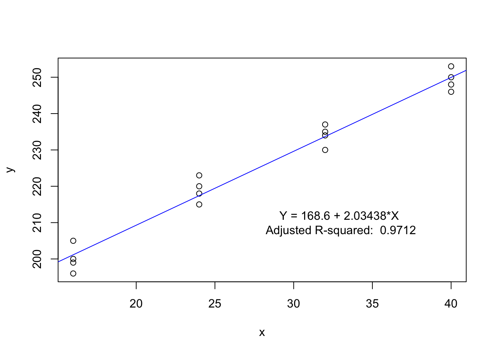
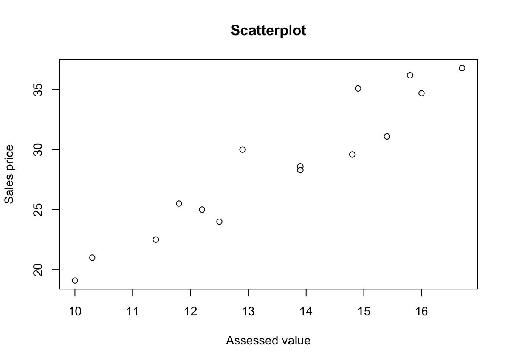
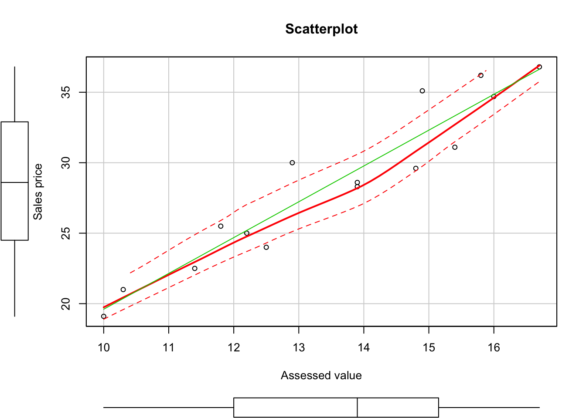

data122 <- read.table("./data/CH01PR22.txt", col.names = c("y", "x"))fit <- lm(y~x, data=data122)
summary(fit)##
## Call:
## lm(formula = y ~ x, data = data122)
##
## Residuals:
## Min 1Q Median 3Q Max
## -5.1500 -2.2188 0.1625 2.6875 5.5750
##
## Coefficients:
## Estimate Std. Error t value Pr(>|t|)
## (Intercept) 168.60000 2.65702 63.45 < 2e-16 ***
## x 2.03438 0.09039 22.51 2.16e-12 ***
## ---
## Signif. codes: 0 '***' 0.001 '**' 0.01 '*' 0.05 '.' 0.1 ' ' 1
##
## Residual standard error: 3.234 on 14 degrees of freedom
## Multiple R-squared: 0.9731, Adjusted R-squared: 0.9712
## F-statistic: 506.5 on 1 and 14 DF, p-value: 2.159e-12(C <-coef(fit))## (Intercept) x
## 168.600000 2.034375beta0 <- C[1]; beta1 <- C[2]
substitute(y<-beta0+beta1*x, list(beta0=beta0, beta1=beta1))## y <- 168.6 + 2.034375 * xHence the regression function is: \[ y= 168.6 + 2.034375X .\]
plot(y~x, data = data122)
abline(coefficients(fit), col="blue")
text_label = substitute(y<-beta0+beta1*x, list(beta0=beta0, beta1=beta1))
text(33, 210, "Y = 168.6 + 2.03438*X \nAdjusted R-squared: 0.9712")
Based on the fitted results, we may conclude that the linear regression gives a good fit.
X40 <- predict.lm(fit, data.frame(x=40))
X40## 1
## 249.975The estimated value at \(x=40\) is \(249.975\).
beta1 <- coefficients(fit)[2]
beta1## x
## 2.034375The a point estimate of the change in mean hardness when X increases by 1 hour is the coefficient of \(x\), i.e. \(\beta_1\). Hence, the value is \(2.034375\).
The formula of the likelihood function is as follows: \[ L(\beta_0, \beta_1, \sigma^2) =\displaystyle\Pi_{i=1}^n \frac{1}{(2\pi\sigma^2)^\frac{1}{2}}\exp\left[-\frac{1}{2\sigma^2}(Y_i-\beta_0-\beta_1X_i)^2\right]. \]
Since \(\beta_0=0\) and \(\sigma^2 =16\), the likelihood function is as follows: \[ L(\beta_1) =\displaystyle\Pi_{i=1}^6 \frac{1}{(32\pi)^\frac{1}{2}}\exp\left[-\frac{1}{32}(Y_i-\beta_1X_i)^2\right]. \]
data142 <- read.table("./data/CH01PR42.txt", col.names = c("y", "x"))
attach(data142)
#head(data142)L <- function(beta1,y,x,sigma2){
diff = y-beta1*x
temp = 1/((2*pi*sigma2)^(1/2))*exp(-1/(2*sigma2)*diff^2)
result = prod(temp,1)
return(result)
}
L(17,y,x,16)## [1] 9.45133e-30L(18,y,x,16)## [1] 2.649043e-07L(19,y,x,16)## [1] 3.047285e-37Hence, the value of the likelihood function for \(\beta_1 =17\) is \(9.4513295\times 10^{-30}\), the value of the likelihood function for \(\beta_1 =18\) is \(2.6490426\times 10^{-7}\) and the value of the likelihood function for \(\beta_1 =19\) is \(3.0472851\times 10^{-37}\). Compared those values, when \(\beta =18\), the likelihood function has the largest value.
estimator <- function(y,x){
result = sum(x*y)/sum(x^2)
return(result)
}
b1= estimator(y,x)
b1## [1] 17.9285According, we get that the value of the estimator \(b_1 = 17.9284974 \approx 18\). Yes, the results in part (b) is consitent with this result, since when \(\beta =18\), the likelihood function has the largest value.
library(car)
data242 <- read.table("./data/CH02PR42.txt", col.names = c("y1", "y2"))
attach(data242)
#head(data242)
plot(y2~y1, data=data242,main="Scatterplot", xlab = "Assessed value", ylab = "Sales price")
scatterplot(y1,y2, main="Scatterplot", xlab = "Assessed value", ylab = "Sales price")
library("MVN")## sROC 0.1-2 loadedroystonTest(data242)## Royston's Multivariate Normality Test
## ---------------------------------------------
## data : data242
##
## H : 0.2719501
## p-value : 0.7044176
##
## Result : Data are multivariate normal.
## ---------------------------------------------From the above test results, we can conclude that the bicariate normal model appear to be appropriate here. Since \(y_1\) and \(y_2\) are bivariate normal.
r12 <- function(x,y){
tmp1 = x-mean(x)
tmp2 = y-mean(y)
result = sum(tmp1*tmp2)/(sum(tmp1^2*sum(tmp2^2)))^0.5
return(result)
}
r12 = r12(y1,y2)
r12## [1] 0.9528469Hence the maximum likelihood estimator \(r_{12} = 0.9528469\). And \(r_{12}\) represents the point estimator of \(\rho_{12}\).
When the population is bivariate normal, it is frequently desired to test where the coefficient of correlation is zero:
Hypothesis
The value of \(t^*\)
tstar <- function(r12, n){
result = r12*sqrt(n-2)/sqrt(1-r12^2)
return(result)
}
n =length(data242[,1])
tstarValue =tstar(r12,n)
tstarValue## [1] 11.32154\[ t^* =\frac{r_{12}\sqrt{n-2}}{\sqrt{1-r_{12}^2}} = 11.3215426\]
t_c <- qt((1-0.01/2), 15-2)
t_c## [1] 3.012276The appropriate decision rule to control the Type I error at \(\alpha\) level:
Since \(t^* = 11.3215426> 3.0122758\), we conclude that \(H_\alpha\), i.e. \(y_1\) and \(y_2\) are not independent and there is an association between \(y_1\) and \(y_2\).